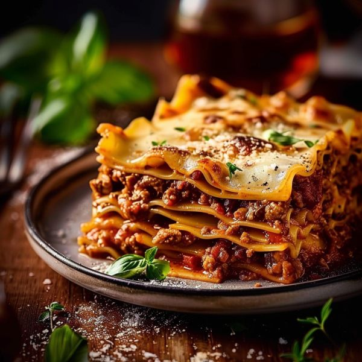
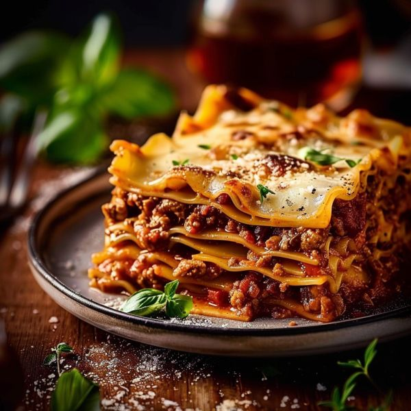

Prepara la salsa boloñesa: En una sartén grande, calienta un poco de aceite de oliva a fuego medio-alto. Sofríe la carne picada hasta que esté dorada y desmenuzada. Retira la carne de la sartén y reserva.
En la misma sartén, agrega un poco más de aceite si es necesario y sofríe la cebolla, el ajo, la zanahoria y el apio (si lo usas) hasta que estén blandos, unos 5-7 minutos.
Vuelve a agregar la carne a la sartén. Incorpora el tomate triturado, el caldo de carne o agua, el orégano, el tomillo, sal y pimienta. Lleva a ebullición, luego reduce el fuego y cocina a fuego lento durante al menos 30 minutos, removiendo ocasionalmente, para que los sabores se mezclen y la salsa espese.
Prepara la salsa bechamel: En una cacerola mediana, derrite la mantequilla a fuego medio. Agrega la harina y cocina durante 1-2 minutos, removiendo constantemente con una varilla, hasta formar un roux dorado.
Retira la cacerola del fuego y vierte la leche tibia poco a poco, removiendo vigorosamente con la varilla para evitar que se formen grumos.
Vuelve a poner la cacerola a fuego medio y cocina, sin dejar de remover, hasta que la salsa espese y hierva suavemente.
Sazona con sal, pimienta y nuez moscada al gusto. Retira del fuego y reserva.
Monta la lasaña: Precalienta el horno a 180°C (350°F).
En la base de una fuente para horno rectangular, extiende una capa fina de salsa bechamel.
Cubre con una capa de placas de lasaña.
Extiende una capa de salsa boloñesa sobre las placas de lasaña, seguida de una capa de queso mozzarella rallado y un poco de queso parmesano.
Repite las capas (bechamel, lasaña, boloñesa, mozzarella, parmesano) hasta agotar los ingredientes, terminando con una capa de bechamel y abundante queso mozzarella y parmesano en la parte superior.
Hornea durante 30-40 minutos, o hasta que la lasaña esté dorada y burbujeante.
Deja reposar la lasaña durante unos 10-15 minutos antes de servir.
 
